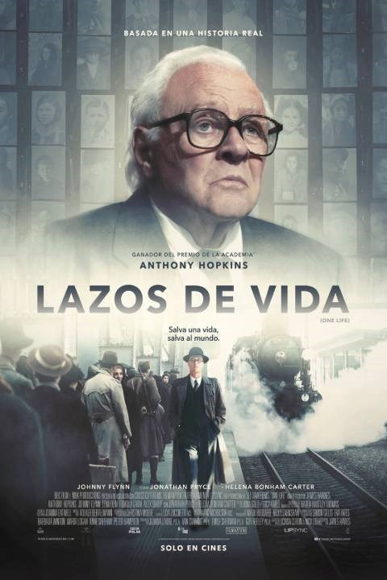

Películas de Drama

Lazos de Vida
un corredor de bolsa londinense que lideró un plan aparentemente imposible de realizar para salvar a 669 niños mientras los nazis avanzaban sobre Checoslovaquia en las vísperas de la Segunda Guerra Mundial.
Comprar Boleto
Angeles Inesperado
Inspirada en la historia real de una peluquera que, sin ayuda de nadie, intentó reunir a toda una comunidad para ayudar a un padre viudo a intentar salvar la vida de su pequeña hija gravemente enferma.
Comprar Boleto